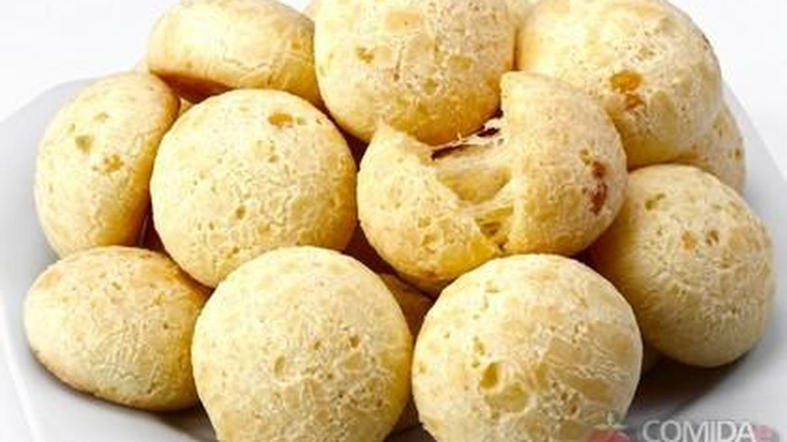

Home
Source
Pão de Queijo

Description
Literally translated to “cheese bread” in Portuguese, these small, round, baked cheese rolls are a popular snack and breakfast food in Brazil. And even though it's called “bread”, the dough doesn't use yeast (hence, gluten-free!) and the consistency is sort of in between a cake batter and cookie dough and is extremely stretchy. These cheese rolls are actually really cool to make, and even more fun to eat! If you want to create a delicious Brazilian feast, serve these yummy rolls alongside a helping of our Brazilian Rice and Beans with Sausage. You won't believe how quickly this meal comes together, yet it looks like you spent hours creating this masterpiece!
Ingredients
- 1/2 cup vegetable oil
- 2 cups tapioca flour (or Tapioca Starch) - You can also use cassava flour (pretty much the same thing)
- 1 teaspoon salt
- 1 cup whole milk
- 2 Eggs
- 3/4 cup Parmesan cheese get a small block of Parmesan and shred it yourself … it makes a BIG difference
- 3/4 cup sharp or medium cheddar cheese shredded (shred yourself, just like the Parmesan)
Steps
- Preheat oven to 350 degrees. Combine the milk, oil, and salt in the saucepan, and whisking occasionally, bring it to a gentle boil over medium heat. Remove from heat as soon as you see big bubbles coming through the milk.
- Add all of the tapioca flour to the saucepan and stir until you see no more dry tapioca flour. The dough will be grainy and gelatinous at this point.
- Transfer the dough to the bowl of a standing mixer fitted with a paddle attachment. (Alternatively, you can do the next few steps by hand. Be prepared for a work-out.) Beat the dough for a few minutes at medium speed until it smooths out and has cooled enough that you can hold your finger against the dough for several seconds.
- Whisk the eggs together in a small bowl. With the mixer on medium, beat the eggs into the dough in two additions. Wait until the first addition has been fully incorporated into the dough before adding the second. Scrape down the sides of the bowl as needed.
- With the mixer on medium, beat in the cheese until fully incorporated. The resulting dough will be very sticky, stretchy, and soft with a consistency between cake batter and cookie dough.
- Using an ice cream scoop, a tablespoon measure, or a dinner spoon, scoop rounded portions of the dough into mounds on the parchment-lined baking sheet.
- Space the mounds an inch or two apart. Dip your scoop in water or spray with cooking spray to prevent sticking.
- Transfer the sheet with the puffs to the oven and bake for 25-28 minutes, until the puffs have puffed, the outsides are dry, and they are JUST starting to color. Do not over bake! Cool briefly and eat.